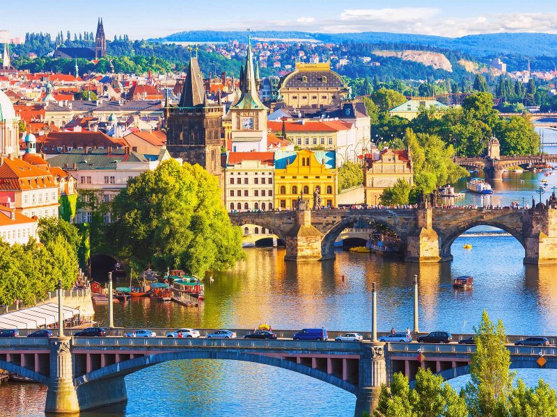
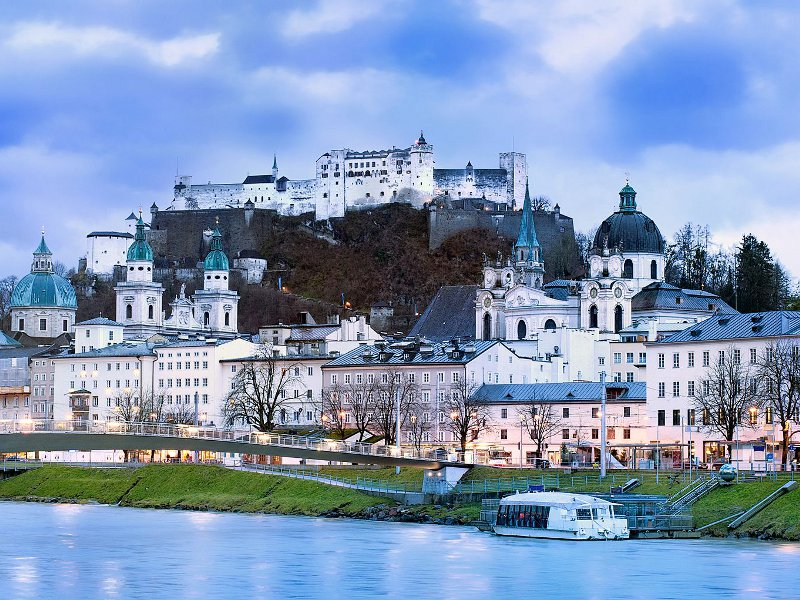
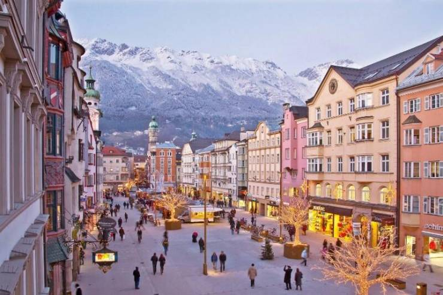
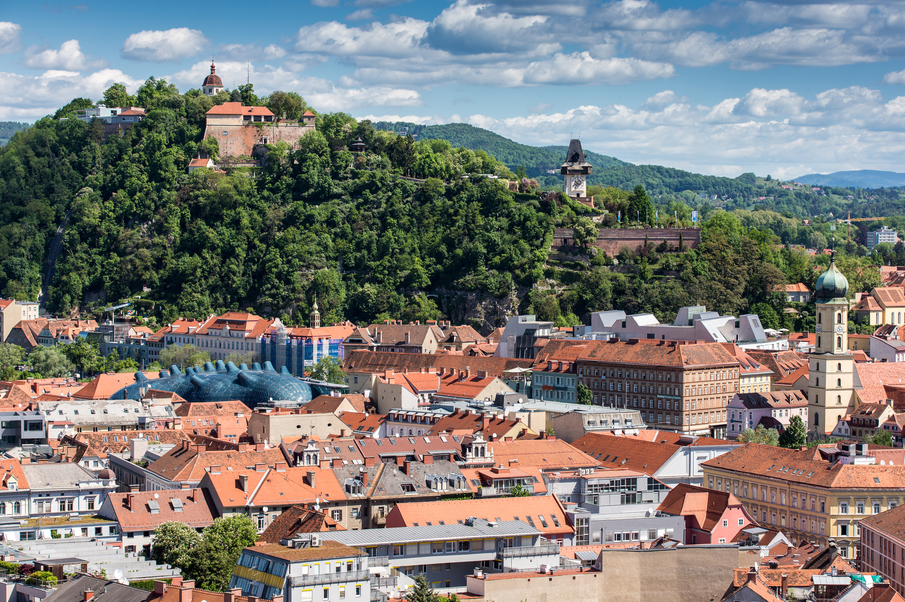

Австрия – это центральноевропейская страна с имперской историей, архитектурой в стиле барокко, горными деревушками и альпийским ландшафтом. Государственный язык здесь немецкий. Столица Австрии – город Вена – расположена на реке Дунай. Вена примечательна своими дворцами Шёнбрунн и Хофбург, а также тем, что в ней жили такие известные люди, как Вольфганг Амадей Моцарт, Иоганн Штраус и Зигмунд Фрейд. Популярными достопримечательностями Австрии являются Богемский лес на севере страны, озеро Траунзе и расположенные на востоке виноградники.
Города Австрии
Вена

Зальцбург

Инсбрук

Грац
